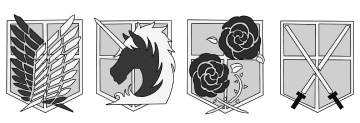
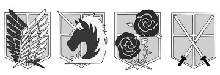

だいたい
-About-
Eren Jaeger (エレン・イェーガー Eren Yēgā?) is a former member of the Scout Regiment and the main protagonist of Attack on Titan. He is the only son of Grisha and Carla Jaeger, the younger paternal half brother of Zeke Jaeger, and the current holder of the Attack Titan, Founding Titan, and the War Hammer Titan. Eren was born and raised in Shiganshina District, which is located on the southern edge of Wall Maria. He lived there until the year 845, when the Colossal and Armored Titans breached the Wall, allowing a flood of Titans to invade and destroy the city. During the incident, Eren witnessed his mother being murdered and eaten by a smiling Titan. This event aroused in Eren an intense hatred towards the Titans, and he swore to wipe all of them off the face of the earth.
タイタンパワーズ
-Titan Powers-
The Attack Titan, like all the Nine Titans, was brought into the world after the death of Ymir Fritz. Though this Titan was presumably caught up in the conflict of houses between the eight Titans of the Eldian Empire subservient to the Founding Titan, it is said that the Attack Titan always fought for the freedom of Eldia no matter the day and age. During the Great Titan War as Marley gradually gained control over seven of the Nine Titans, the Attack Titan evidently never fell into Marley's hands and remained on the mainland while the Founding Titan remained overseas on Paradis Island where the 145th Fritz King, Karl Fritz, relocated the capital.
The Founding Titan (始祖の巨人 Shiso no Kyojin?) is one of the Nine Titans that was once in the possession of the Reiss family, who passed it down from generation to generation. Its screams can alter the minds of both humans and Titans, but in the case of the former, some bloodlines are exempt from its power, but this power had historically only been able to be used by members of the royal family. It is currently in the possession of Eren Jaeger.

The War Hammer Titan (戦鎚の巨人 Sentsui no Kyojin?) is one of the Nine Titans that possesses the ability to create any structure out of hardened Titan flesh. Until 854, it was kept within the Tybur family for generations following the conclusion of the Great Titan War. It is currently in the possession of Eren Jaeger and fused with both the Attack Titan and Founding Titan. The War Hammer Titan can produce and manipulate structures that are made of hardened Titan flesh. These structures can be weaponized, forming pikes large enough to impale and lift a 15m Titan, flooding areas with protrusions such as spikes, and manifesting the Titan's signature war hammer. This ability can also create flexible weaponry components, such as the string of a crossbow or the whips of a cat-o'-nine-tails, making this a particularly unique brand of hardening. Much like the Female Titan, this hardening can also be used to encase the human operator of the War Hammer Titan inside a crystal casing
 
